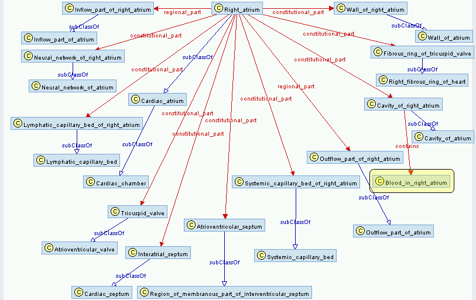

What do we mean when we say "regular paths"? A regular path is a path, in a graph, were the ordered list of edges along that path satisfy a given path expression. The path expression grammar we use is similar to common regular expression pattern languages, thus the term "regular paths". An example of a path expression, in our syntax, is [part]* indicating paths with zero or more part edges.
Perhaps it is a bit surprising that SparQL, the W3C recommended RDF query language, lacks support for graph path traversal patterns. RDF is, after all, a graph data model. Path operations, such as transitive closure, seem a necessary construct of a graph query language. However, for design reasons, such functionality is not included in SparQL out of the box.
The work presented here is a minimally invasive way of adding regular path support within ARQ, the SparQL query processor used by the Jena RDF framework.
Note, some examples on this page use the prefix "fma", a shorthand for the Foundational Model of Anatomy. This is used for illustrative purposes, but the GLEEN library is not restricted to a particular ontology.
Ideally we would like to augment SparQL query processing, adding support for regular path processing, without deviating from the SparQL specification. The current SparQL specification does not provides constructs specifically for path expressions, but it does support some user defined functions. While the current specification appears to limit these functions to filter clauses, ARQ supports an additional extensible function type, property functions. GLEEN, a Java library which adds support for processing regular path expressions, is implemented as ARQ property functions.
ARQ property functions are syntactically allowed triple patterns in SparQL, though they are special in their processing. An ARQ property function looks like this:
SubjectArgument PropertyFunction ObjectArgument .
Such triples are identifiable as property functions based on the prefix used by the PropertyFunction argument. Such prefixes begin with "java:" and give the complete name, including package, of the Java class that will be used for custom process. For example,. a property function might look like gleen:OnPath where the prefix is defined by PREFIX gleen:<java:edu.washington.sig.gleen.>. The actual class used for processing, in this example, would be edu.washington.sig.gleen.OnPath. The SubjectArgument and ObjectArgument portions of the property function triple may be either unary values of lists of values, as we will see in subsequent sections.
The GLEEN OnPath function determines the set nodes in a graph which are related to the query node(s) by a given path expression. These results are bound to query variables for subsequent reuse. The OnPath function can, for example, be used to determine the nodes that stand in the transitive closure of a given property from a given node. For example an OnPath property function call which finds, transitively, those nodes in the Foundational Model of Anatomy (...insert ref...) which are "regional_part" of the Heart looks like this:
fma:Heart gleen:OnPath ( "[fma:regional_part]*" ?heart_part ) .
A properly formed call to OnPath contains a unary value in the SubjectArgument position and a 2 element list in the ObjectArgument position. The 2 element ObjectArgument must be a literal string representation of the path expression. This expression must be consistent with the GLEEN path expression grammer. The 2nd element of the ObjectArgument, as well as the single SubjectArgument can be unbound variables, bound variables, or node URIs, though they cannot both be unbound.
GLEEN path expressions support operators similar to those found in regular expression grammars, like '?' (zero or one), '*' (zero or more), '+' (one or more), '|' (alternation), and '/' (concatenation). Square brackets are used as property delimiters while parenthesis are used as grouping operators. Here is another example of an OnPath call:
fma:Heart gleen:OnPath ( "[fma:regional_part]*/[fma:contains]" ?heart_containment ) .
The above example binds to the variable ?heart_containment, all resources that can be found on paths from fma:Heart by traversing zero or more fma:regional_part properties followed by a single fma:contains property (in the FMA fma:Blood_in_right_atrium, for example, is connected to the fma:Heart because it is contained in one of its parts, fma:Right_atrium).
A more complex example, below, binds to the variable ?bar all resources identified as equivalent to example:foo (where classes in an equivalency list may themselves have equivalents, and so on).
example:foo gleen:OnPath ( "([owl:equivalentClass]/[owl:intersectionOf]/[rdf:rest]*/[rdf:first])+" ?bar ) .
For a more complete specification of the GLEEN path expression grammar, see GLEEN grammar spec.
While the OnPath function can be used to locate all of the resources in a graph that stand in a particular relationship pattern to a query resource, it simply returns the set of reachable resources. What it does not do is return the set of resources and properties traversed on paths to these results. This is precisely the purpose of the GLEEN Subgraph function. A call to the Subgraph function is as follows:
(inputSubject pathExpression inputObject) gleen:Subgraph (outputSubject outputPredicate outputObject) .
The list of arguments in the subject position of the above function call are the input arguments. Either the inputSubject or inputObject must be bound (or both). The pathExpression argument is a string representation of the path pattern of interest. The list of arguments in the object position (outputSubject outputPredicate outputObject) must all be unbound variables. These will be bound for all triples on paths matching the pathExpression pattern.
Consider the following sample graph:

The OnPath function, for the path expression
fma:Right_atrium gleen:OnPath "([fma:regional_part]|[fma:constitutional_part])+/[fma:contains]" ?containments
would bind the following highlighted node "Blood_in_right_atrium" to the ?containments variable:

The Subgraph function call
(fma:Right_atrium "([fma:regional_part]|[fma:constitutional_part])+/[fma:contains]" ?obj) gleen:Subgraph (?a ?b ?c)
would bind the variables ?a, ?b, and ?c as follows:
?a |
?b |
?c |
| Right_atrium | constitutional_part | Cavity_of_right_atrium |
| Cavity_of_right_atrium | contains | Blood_in_right_atrium |
An illustration of the subgraph involved in this path expression is shown in this figure:
GLEEN can be dowloaded here: GLEEN downloads.
All that is required to make the GLEEN library accessible by a functioning Jena/ARQ SparQL processor is to place the GLEEN jar (and its supporting libraries) on the classpath. Then, any query that will call the GLEEN property functions should include a prefix such as:
PREFIX gleen:<java:edu.washington.sig.gleen.>
Note also that GLEEN requires Java version 1.5 or newer.
As mentioned in the limitations section, the current path functions only work for discovering resource nodes connected to other resource nodes by a particular path pattern, they cannot presently be used to discover nodes connected to literal values. It is possible that we may wish to extend GLEEN in the future to allow for this sort of pattern.
One possible extension involves add conditionals to path expressions such that a path is bound only if it matches the pattern and has side branches matching given conditions. So, for example, if I have these triples in the graph:
A -> rdfs:subClassOf -> B
B -> owl:onProperty -> fma:part
B -> owl:someValuesFrom -> C
C -> rdfs:subClassOf -> D
D -> owl:onProperty -> fma:part
D -> owl:someValuesFrom -> E
C -> rdfs:subClassOf -> F
F -> owl:onProperty -> fma:contains
F -> owl:someValuesFrom -> G
A path expression such as "([rdfs:subClassOf]/[owl:someValuesFrom])+" would lead us to {C, E, G}. However, what if we only wanted to follow paths like this when the property is "fma:part" (e.g. the intermediate nodes reachable by rdfs:subClassOf edges must have an owl:onProperty branch that connects to fma:part). To enable this sort of processing would require extension to the GLEEN grammar.
Also, of course, users will guide future work through their input. This work is still in its prototype stage and feedback is encouraged.
This library was developed by Todd Detwiler from the University of Washington Structural Informatics Group. Please direct questions or comments to det@u.washington.edu
GLEEN is implemented as an extension library for ARQ, the SparQL query processor within the Jena RDF framework. The ARQ/Jena framework was heavily leveraged in this work. The path expression parser inside of GLEEN was generated using the JavaCC parser generator. This project was supported by NIH grant "Realizing the potential of reference ontologies for the semantic web" (1R01HL087706-01).